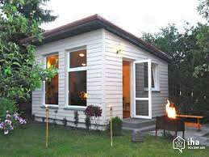

Seattle Regulations
Affordability in housing is one of the biggest issues we face in Seattle today. The City of Seattle has identified the need for providing a mix of housing types at prices accessible to people at all levels of income, both for homeowners and renters. Backyard cottages, or Detached Accessory Dwelling Units (DADUs,) and in-law apartments, or Attached Accessory Dwelling Units (AADUs), have the potential to provide a significant amount of more affordable options for housing in neighborhoods where homes are often unaffordable to many people. If just 5% of eligible lots in the city build DADUs it would create about 4,000 housing units. There are relatively few backyard cottages in Seattle right now. In May of 2016, the Seattle City Council released a proposal that would make it easier for more homeowners to build backyard cottages and mother-in-law units in Seattle and provide more housing options for Seattle renters.
